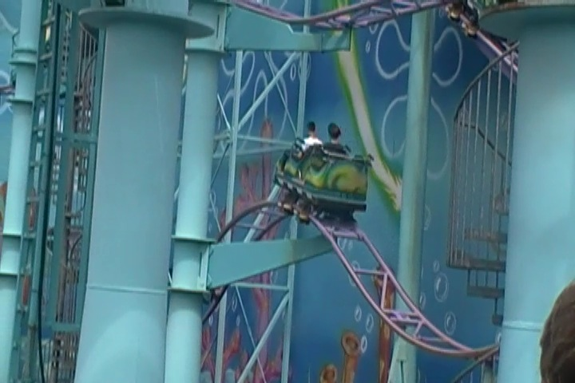

| |
Ghost Chasers Review

We're here at Movie Park Germany where we'll reveiwing Ghost Chasers. The park's wild mouse. After getting in the seats and pulling down the lap bar, you go up the lifthill. Up, up, and up you go. Looking around, you can see the switchbacks on the ride as well as the cheesy theming of the Flying Dutchman from Spongebob Squarepants. Then once we get to the top, you get whipped around a turn and set into the switchbacks. The switchbacks are fun because those turns are just great. It really whips you. Then after going through the set of switchbacks, you are set off into a nice big turn that just pins you to the side the entire time. Then unfortunetly, there are some trim brakes before the big drop, but that's ok. Then you turnaround only to go through the rides biggest drop. While it's not a very big drop. It's still fun. Trust me, you actually get some good ejector airtime right there. I am not kidding. Then you meet another set of trim brakes, Then you come through another turnaround where we head towards the end of the ride. after another small drop, we head into the extra hump. Now actually, this hump is found on many Wild Mouse rides around the world, but because Goofy's Sky School doesn't have it, it is always refered to as the extra hump that Goofy's Sky School doesn't have. The extra hump is a lot of fun and definetly something that should be on all Wild Mice. At this point, pretty much over as we turn into a final dip into the brake run. While Ghost Chasers isn't too special, I still find it as a good Wild Mouse as the turns are flat, the drops are fun, there aren't too many brakes, it has the extra hump, and it is easily one of the more agressive Wild Mouse coasters ever buit! Don't be fooled by the fact that it's in the kids area. This ride is mean and agressive. =) If you've been on a clone of it, I'd recommend skipping it. But if you're only limited to Arrow Mice, Goofy's Sky School, or have never ridden a Wild Mouse at all, I'd highly recommend riding it. Besides, it's not like you have a whole lot to choose from at Movie Park Germany.
7/10
Location: Movie Park Germany
Opened: 2000
Built by: Mack
Last Ridden: June 28, 2012
I have ridden this exact same ride at the following parks.
Bakken
Carowinds
Hersheypark
Nagashima Spaland
Ghost Chasers Photos


Home
|